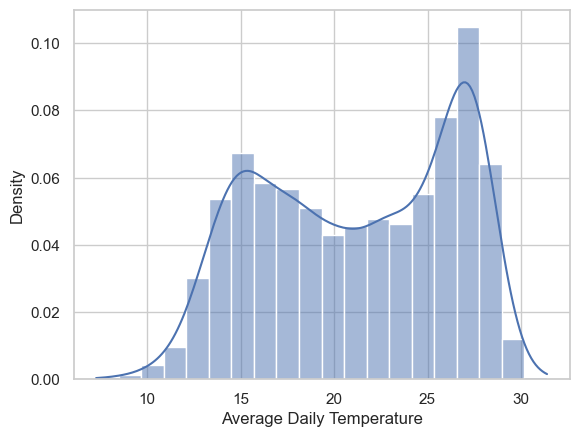

2 Tutorial 2
2.1 Topics
- Summary statistics
- Quantiles
- Histograms
- Encoding categorical varaibles
2.2 Important Python Packages
- Pandas
- Seaborn
- Matplotlib
2.3 Today’s datasets
- City Temperatures – Daily temperature for different international cities (download .csv here)
| Country | City | Month | Day | Year | AvgTemperature | |
|---|---|---|---|---|---|---|
| 0 | Malawi | Lilongwe | 1 | 1 | 1995 | 69.5 |
| 1 | Malawi | Lilongwe | 1 | 2 | 1995 | 69.5 |
| 2 | Malawi | Lilongwe | 1 | 3 | 1995 | 67.5 |
| 3 | Malawi | Lilongwe | 1 | 4 | 1995 | 68.5 |
| 4 | Malawi | Lilongwe | 1 | 5 | 1995 | 66.7 |
| ... | ... | ... | ... | ... | ... | ... |
| 47392 | US | Rochester | 5 | 9 | 2020 | 33.9 |
| 47393 | US | Rochester | 5 | 10 | 2020 | 41.4 |
| 47394 | US | Rochester | 5 | 11 | 2020 | 40.7 |
| 47395 | US | Rochester | 5 | 12 | 2020 | 38.9 |
| 47396 | US | Rochester | 5 | 13 | 2020 | 34.0 |
47397 rows × 6 columns
array(['Lilongwe', 'Capetown', 'Tel Aviv', 'Amman', 'Beirut', 'Rochester'],
dtype=object)# isolate data from a single city (e.g., Tel Aviv)
city = 'Tel Aviv'
TA_temp = temp_df.loc[temp_df['City'] == city]
TA_temp| Country | City | Month | Day | Year | AvgTemperature | |
|---|---|---|---|---|---|---|
| 14959 | Israel | Tel Aviv | 1 | 1 | 1995 | 57.3 |
| 14960 | Israel | Tel Aviv | 1 | 2 | 1995 | 56.1 |
| 14961 | Israel | Tel Aviv | 1 | 3 | 1995 | 55.9 |
| 14962 | Israel | Tel Aviv | 1 | 4 | 1995 | 56.9 |
| 14963 | Israel | Tel Aviv | 1 | 5 | 1995 | 56.6 |
| ... | ... | ... | ... | ... | ... | ... |
| 19595 | Israel | Tel Aviv | 9 | 11 | 2007 | 79.5 |
| 19596 | Israel | Tel Aviv | 9 | 12 | 2007 | 79.7 |
| 19597 | Israel | Tel Aviv | 9 | 13 | 2007 | 79.7 |
| 19598 | Israel | Tel Aviv | 9 | 14 | 2007 | 79.6 |
| 19599 | Israel | Tel Aviv | 9 | 15 | 2007 | 80.0 |
4641 rows × 6 columns
count 4641.000000
mean 54.020448
std 50.624184
min -99.000000
25% 59.400000
50% 68.700000
75% 78.600000
max 88.500000
Name: AvgTemperature, dtype: float64/var/folders/wn/2bz1970d2w5182zy7h96yfcc0000gn/T/ipykernel_82655/3623248864.py:2: SettingWithCopyWarning:
A value is trying to be set on a copy of a slice from a DataFrame.
Try using .loc[row_indexer,col_indexer] = value instead
See the caveats in the documentation: https://pandas.pydata.org/pandas-docs/stable/user_guide/indexing.html#returning-a-view-versus-a-copy
TA_temp['AvgTemp_C'] = (TA_temp['AvgTemperature'] - 32)*(5/9)count 4196.000000
mean 21.249325
std 5.193370
min 7.277778
25% 16.555556
50% 21.611111
75% 26.277778
max 31.388889
Name: AvgTemp_C, dtype: float64# get the mean for the city you chose
mean_temp = TA_temp['AvgTemp_C'].mean()
print(f"The mean temperature in {city} is: {mean_temp:.2f} degrees Celcius")The mean temperature in Tel Aviv is: 21.25 degrees Celcius# get the median temperature for the city you chose
median_temp = TA_temp['AvgTemp_C'].median()
print(f"The median temperature in {city} is: {median_temp:.2f} degrees Celcius")The median temperature in Tel Aviv is: 21.61 degrees Celcius# get the 10th percentile for the city you chose
percentile_10 = TA_temp['AvgTemp_C'].quantile(.1)
print(f"The tenth percentile in {city} is: {percentile_10:.2f} degrees Celcius")The tenth percentile in Tel Aviv is: 14.17 degrees Celcius# get the 90th percentile for the city you chose
percentile_90 = TA_temp['AvgTemp_C'].quantile(.9)
print(f"The ninetieth percentile in {city} is: {percentile_90:.2f} degrees Celcius")The ninetieth percentile in Tel Aviv is: 27.67 degrees Celcius# make a box plot of temperature for the city you chose
fig, ax = plt.subplots()
# ax = sns.boxplot(x=TA_temp.AvgTemp_C)
sns.boxplot(x=TA_temp['AvgTemp_C'], ax=ax)
ax.set(xlabel=f'Average Daily Temperature in {city}')[Text(0.5, 0, 'Average Daily Temperature in Tel Aviv')]
# compare all the cities
# clean data
temp_df = temp_df.loc[temp_df['AvgTemperature']>(-50)]
temp_df['AvgTemp_C'] = (temp_df['AvgTemperature'] - 32)*(5/9)
# plot
fig, ax = plt.subplots()
sns.boxplot(x=temp_df['AvgTemp_C'], y=temp_df['City'], ax=ax)
ax.set(xlabel='Average Daily Temperature')/var/folders/wn/2bz1970d2w5182zy7h96yfcc0000gn/T/ipykernel_82655/3601528637.py:5: SettingWithCopyWarning:
A value is trying to be set on a copy of a slice from a DataFrame.
Try using .loc[row_indexer,col_indexer] = value instead
See the caveats in the documentation: https://pandas.pydata.org/pandas-docs/stable/user_guide/indexing.html#returning-a-view-versus-a-copy
temp_df['AvgTemp_C'] = (temp_df['AvgTemperature'] - 32)*(5/9)[Text(0.5, 0, 'Average Daily Temperature')]2.4 Try out
- plot the Average Daily Temperature of the year 2000 for all cities
- plot the Average Daily Temperature of January 1st for all cities in all years
Answer for 1
[Text(0.5, 0, 'Average Daily Temperature in 2000')]Answer for 2
[Text(0.5, 0, 'Average Daily Temperature on Jan 1st')]# make a histogram of the data for the city you chose
fig, ax = plt.subplots()
sns.histplot(x=TA_temp['AvgTemp_C'], ax=ax)
ax.set(xlabel=f'Average Daily Temperature in {city}')[Text(0.5, 0, 'Average Daily Temperature in Tel Aviv')]# play around with the bin size for the histogram -- try more bins
fig, ax = plt.subplots()
sns.histplot(x=TA_temp['AvgTemp_C'], bins=100, ax=ax)
ax.set(xlabel='Average Daily Temperature')[Text(0.5, 0, 'Average Daily Temperature')]# now fewer bins
fig, ax = plt.subplots()
sns.histplot(x=TA_temp.AvgTemp_C, bins=10, ax=ax)
ax.set(xlabel='Average Daily Temperature')[Text(0.5, 0, 'Average Daily Temperature')]# add kernel density estimator
fig, ax = plt.subplots()
sns.histplot(x=TA_temp.AvgTemp_C, bins=20, kde = True, ax=ax)
ax.set(xlabel='Average Daily Temperature')[Text(0.5, 0, 'Average Daily Temperature')]# how can we normalize the histogram data?
fig, ax = plt.subplots()
sns.histplot(x=TA_temp['AvgTemp_C'], bins=20, kde=True, stat="density", ax=ax)
ax.set(xlabel='Average Daily Temperature')[Text(0.5, 0, 'Average Daily Temperature')]
what’s the difference between the “density” stat and “probablity” stat? read the documentation.
# plotting 2 side by side
fig, ax = plt.subplots(1,2, sharey=True)
sns.histplot(x=TA_temp.AvgTemp_C, bins=20, kde=True, stat="probability", ax=ax[0])
ax[0].set(title='propability', xlabel='Average Daily Temperature')
sns.histplot(x=TA_temp.AvgTemp_C, bins=20, kde=True, stat="density", ax=ax[1])
ax[1].set(title='density', xlabel='Average Daily Temperature')[Text(0.5, 1.0, 'density'), Text(0.5, 0, 'Average Daily Temperature')]# add the mean to the plot
mean_temp = TA_temp['AvgTemp_C'].mean()
fig, ax = plt.subplots()
sns.histplot(x=TA_temp['AvgTemp_C'],
bins=20,
kde=True,
stat="probability",
ax=ax,
)
ax.set(xlabel='Average Daily Temperature')
ax.axvline(mean_temp, label='mean', color='r')
ax.text(mean_temp,0.14, 'mean', va='bottom',
ha='center', fontsize=14, weight='bold', color='r') Text(21.249324753733717, 0.14, 'mean')
2.5 Try out
- add the mode
- add the median
2.6 Encoding categorical variables
Sometimes, for reasons that will be clear on the HW, we’ll want to encode our categorical variables so that they are numbers instead.
There are many ways that we can achive this.
Here will learn one, for more examples see: https://pbpython.com/categorical-encoding.html
array(['Lilongwe', 'Capetown', 'Tel Aviv', 'Amman', 'Beirut', 'Rochester'],
dtype=object)# new dataframe with encoded values
temp_df_encoded = temp_df.replace(cleanup_cities)
temp_df_encoded.dtypesCountry object
City int64
Month int64
Day int64
Year int64
AvgTemperature float64
AvgTemp_C float64
dtype: objectCountry object
City object
Month int64
Day int64
Year int64
AvgTemperature float64
AvgTemp_C float64
dtype: object# assign city to be a categorical variable
temp_df["City"] = temp_df["City"].astype('category')
temp_df.dtypes/var/folders/wn/2bz1970d2w5182zy7h96yfcc0000gn/T/ipykernel_82655/1724604918.py:2: SettingWithCopyWarning:
A value is trying to be set on a copy of a slice from a DataFrame.
Try using .loc[row_indexer,col_indexer] = value instead
See the caveats in the documentation: https://pandas.pydata.org/pandas-docs/stable/user_guide/indexing.html#returning-a-view-versus-a-copy
temp_df["City"] = temp_df["City"].astype('category')Country object
City category
Month int64
Day int64
Year int64
AvgTemperature float64
AvgTemp_C float64
dtype: object/var/folders/wn/2bz1970d2w5182zy7h96yfcc0000gn/T/ipykernel_82655/3917241889.py:2: SettingWithCopyWarning:
A value is trying to be set on a copy of a slice from a DataFrame.
Try using .loc[row_indexer,col_indexer] = value instead
See the caveats in the documentation: https://pandas.pydata.org/pandas-docs/stable/user_guide/indexing.html#returning-a-view-versus-a-copy
temp_df["City_encoded"] = temp_df["City"].cat.codesCountry object
City category
Month int64
Day int64
Year int64
AvgTemperature float64
AvgTemp_C float64
City_encoded int8
dtype: object